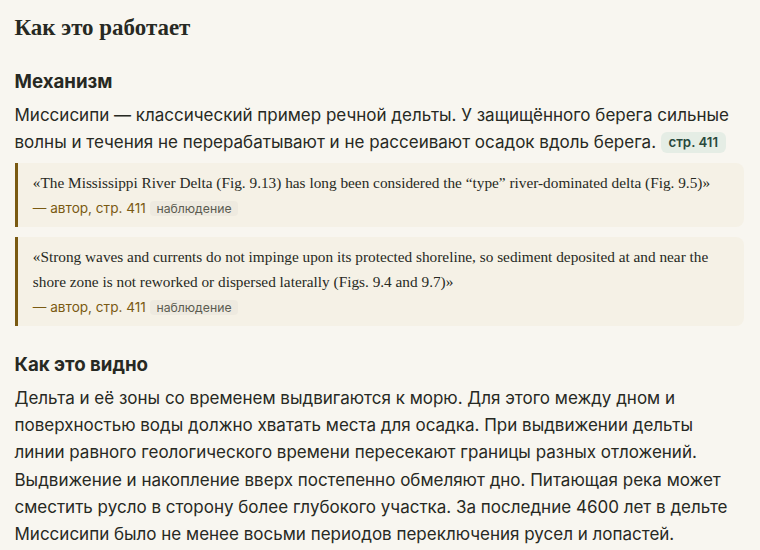
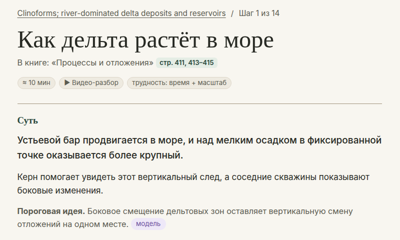
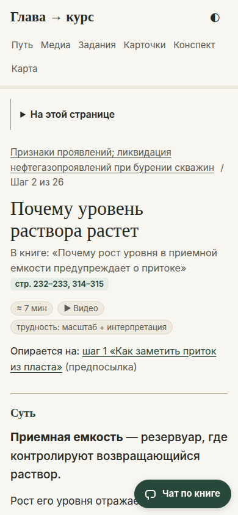
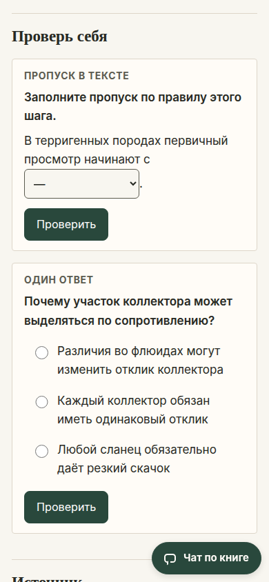
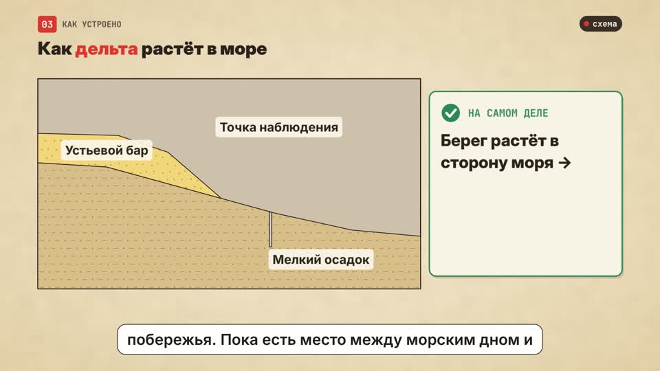
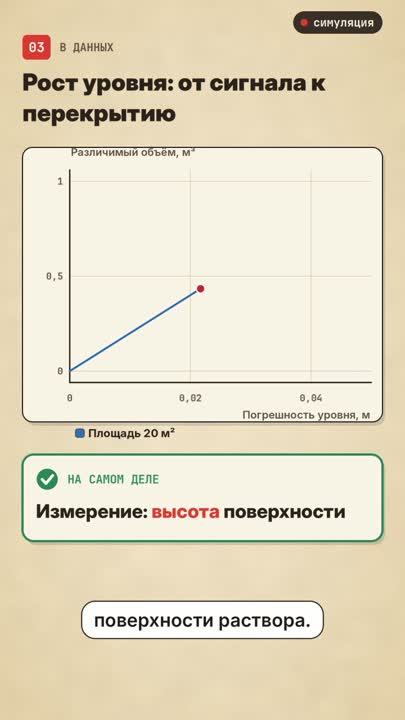

Конвейер превращает главу учебника в курс для новичка и ролики. Каждое утверждение привязано к странице и проверено кодом.
| Глава | Единиц главы | Узлов | Цитат дословно | Чисел без опоры | Шагов курса | Заданий | Карточек | Ролик | Ручн. мин | Прогон |
|---|---|---|---|---|---|---|---|---|---|---|
| Asquith · каротажангл., двойник 1 | 362 | 66 | 416 / 416 | 0 | 66 | 134 | 133 | — | 1 | 19 мин |
| Dake · радиальный притокангл., двойник 2 | 173 | 21 | 130 / 130 | 0 | 21 | 63 | 42 | — | 0 | 20 мин |
| Slatt · речная дельтаангл., двойник 3 | 35 | 14 | 95 / 95 | 0 | 14 | 42 | 28 | 16:9 · 2:09 | 1 | 22 мин |
| Басарыгин · ГНВПбурение, новый домен | 98 | 26 | 168 / 168 | 0 | 26 | 59 | 55 | 9:16 · 1:02 | 7,2 | 25 мин |
| Итого | 668 | 127 | 809 / 809 | 0 | 127 | 298 | 258 | 2 | 9,2 | параллельно |
Задания всех 5 типов в каждой главе. Прогон — от старта до готового сайта, включая ответы модели; главы шли параллельно. Покрытие единиц главы — 100 % во всех четырёх.

Slatt, §9.4.1, стр. 411 — шаг «Как дельта растёт в море»


Бурение, шаг 2, 390 px

Задания с проверкой, Asquith

Slatt §9.4.1 · разбор 16:9 · 2:09 · 7 кадров класса B (схема)

Басарыгин · шортс 9:16 · 1:02
| Глоссарий RU/EN | 57 терминов |
| Заблуждения новичков | 14 |
| ИТ-мосты с границей аналогии | 10 |
| Словарь ударений и сокращений | 57 записей |
| Чек-лист физики, стайлгайд | есть |
Один запрос к модели по выжимке главы; время записано в BUILD.json. Код конвейера не менялся.
На тесте отвечал Claude через очередь запросов: счёта провайдера нет, оценка по токенам — $0,7–0,9 на узел по прайсу $15 / $75 за млн. Тот же кэш переигрывается на любой API-модели.